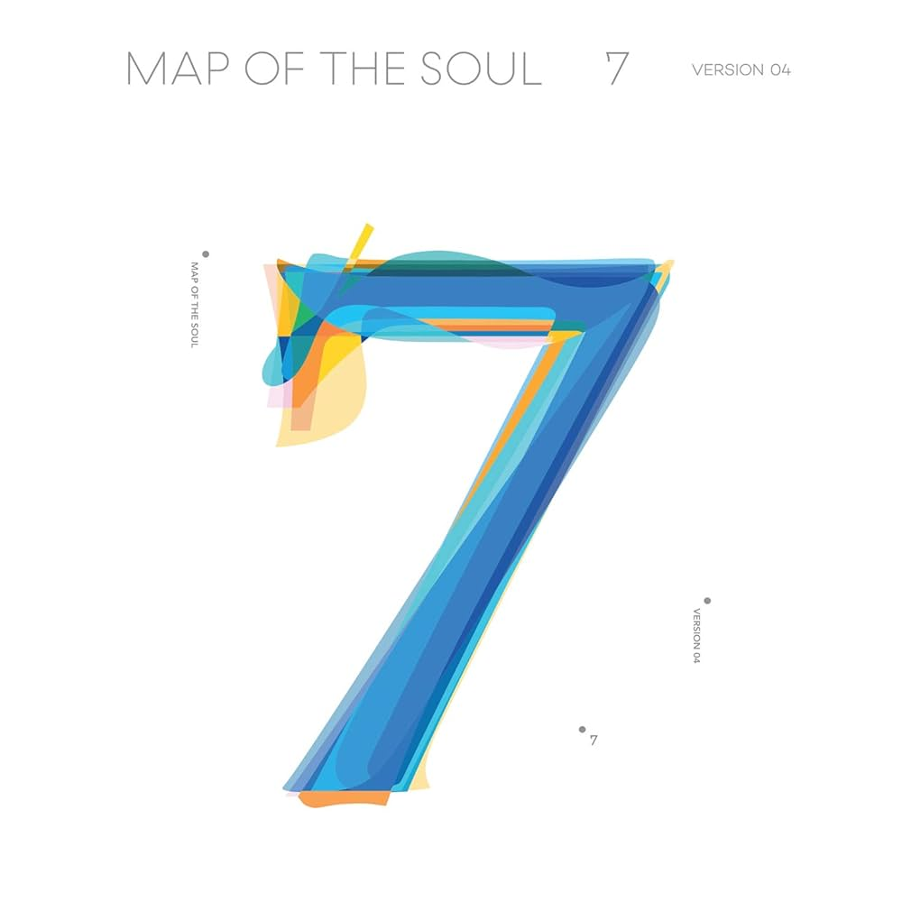

A picture from the Proof album; the last album BTS released as a group before taking a hiatus to join the military.
This is BTS. Otherwise known as Bangtan Sonyeondan (방탄소년단), which translates to Bulletproof Boy Scouts.
They are a kpop group founded in 2013 under BigHit Music. From performing and speaking at the
United Nations General Assembly, being the first kpop group
to be nominated for multiple Grammys, and reaching new heights when it comes to awards for their music, BTS is a name
you will never stop hearing.
Members
A picture of BTS at the 2022 Grammys.
BTS has seven members. In the above picture, from left to right, their names are as follows:
V, real name Kim Taehyung (김태형)
Suga, real name Min Yoongi (민윤기)
Jin, real name Kim Seokjin (김석진)
Jungkook, real name Jeon Jungkook (전정국)
RM (Rap Monster), real name Kim Namjoon (김남준)
Jimin, real name Park Jimin (박지민)
J-Hope, real name Jung Hoseok (정허석)
The members are often referred to in groups as lines - smaller groups within the larger group of members with a similar trait.
For example, the rap line consists of Suga, RM, and J-Hope, while the vocal line consists of V, Jin, Jungkook, and Jimin.
A good to know: In kpop fandoms, a person's bias is their favorite member of a group. As a BTS fan, if someone doesn't have a
bias, that's described as being OT7.
Discography
BTS has a long discography, as is to be expected from a group that's been making music for nearing 12 years now. Here's a few of their albums/eras:
2 Cool 4 Skool: Released 2013, the debut album.
Dark & Wild: Released 2014, the first full album.
The Most Beautiful Moment in Life Pt.2: Released 2015, part of the HYYH series, which came with a whole complex storyline in the music videos.
Wings: Released 2016, the second full album.
Love Yourself: Answer: Released 2018, the final piece of the Love Yourself series, where BTS officially started to become a global phenomenon.

Map of the Soul: 7: Released 2020, was going to lead to a world tour until COVID-19 happened.
BE: Released 2020, a reflection of all the feelings we felt during COVID-19.
Proof: Released 2022, an anthology album and the final album before their hiatus.
Triple Run BTS
A fun little fact about BTS is that there are three separate things that have the words "Run" and "BTS" in tandem.
First is Run, the song, by BTS. This song was released in 2015 as the title track for The Most Beautiful
Moment in Life Pt.2, and is one of my personal favorites.
Next is Run BTS, the show. This is a variety show that BTS has
done as a group, off and on, since 2015. It just might be peak entertainment, as long as you can read subtitles really fast.
And finally, Run BTS, the song, by BTS. This song was one of three brand new songs released on Proof, and
was perhaps the one fans were most excited about - especially when, at their final, free concert, Yet To Come in Busan, they pulled out a
never before seen, complete choreo, akin to that which they did in their ealier years.
So yes, there are three different "Run BTS". And yes, Google hates that.
Where Are They Now?
I've mentioned a hiates a few times now. But what exactly do I mean?